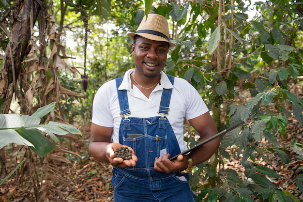
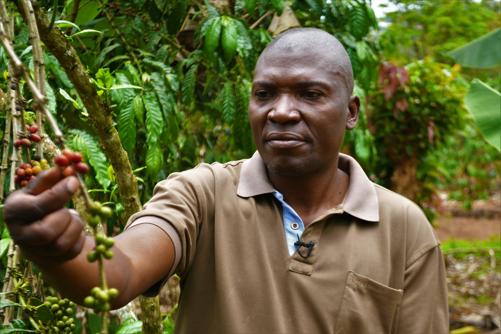
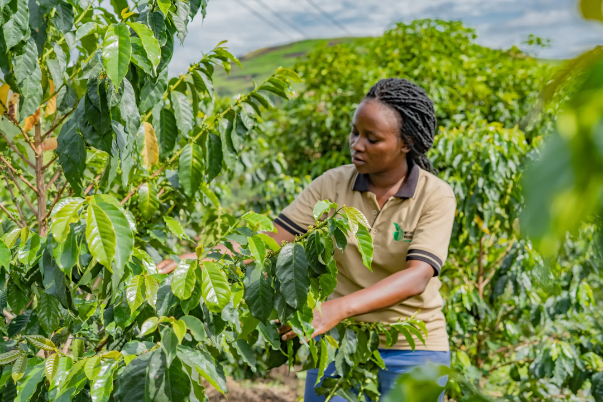
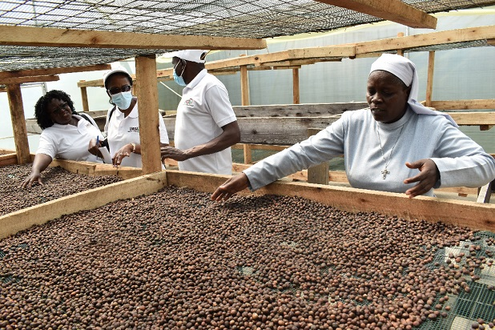
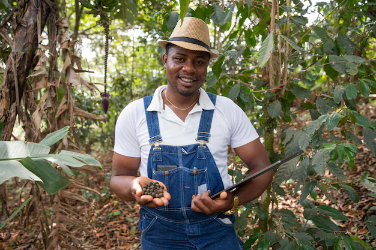
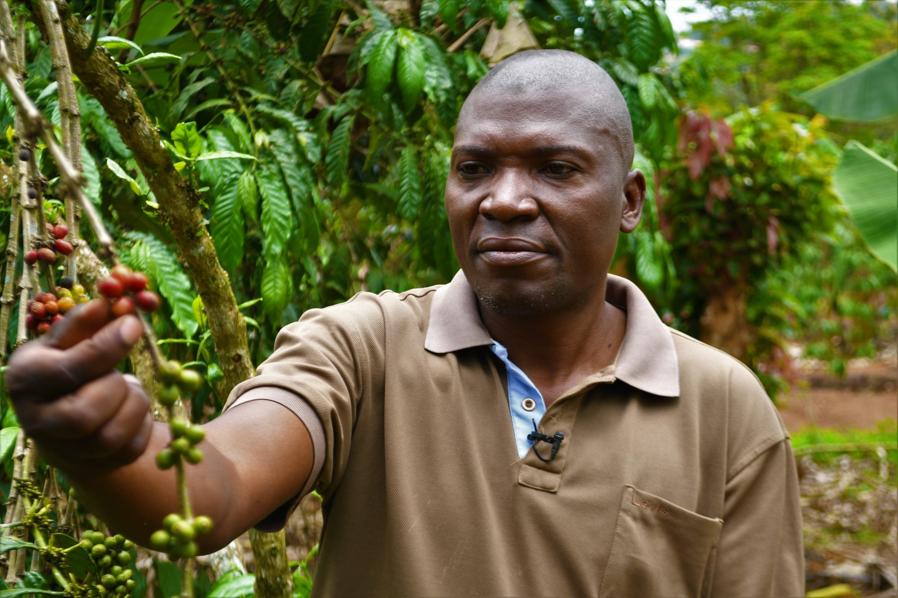
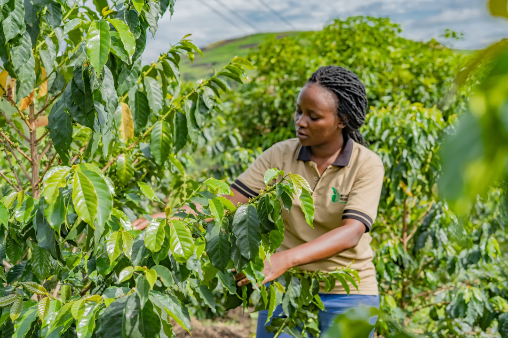
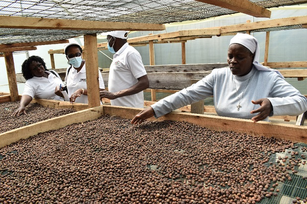

Welcome to Kasozi Farmers Site
Discover modern farming techniques, connect with expert agriculturists, and access valuable resources to enhance your farming practices. Our platform is dedicated to empowering farmers with knowledge and tools for sustainable agriculture.
Join our growing community of successful farmers and learn about the latest innovations in agricultural technology, crop management, and sustainable farming practices. Whether you're a seasoned farmer or just starting out, we're here to support your agricultural journey.
Get Started